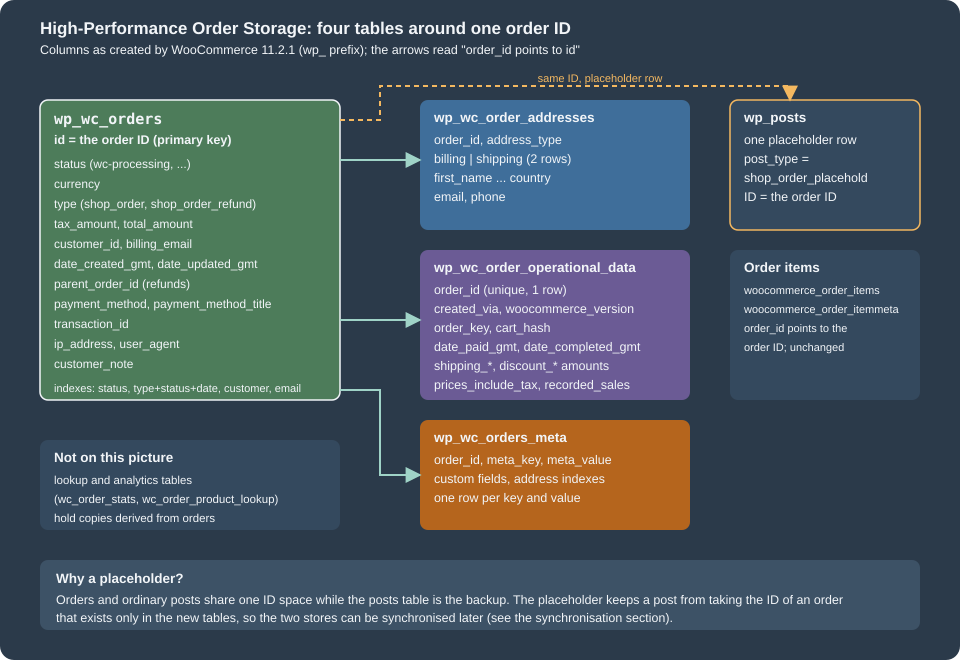
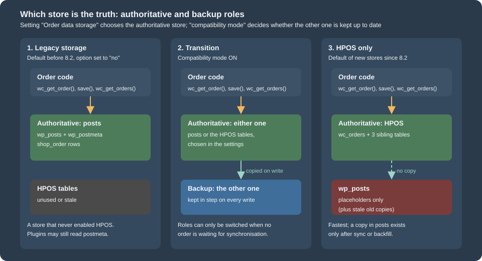
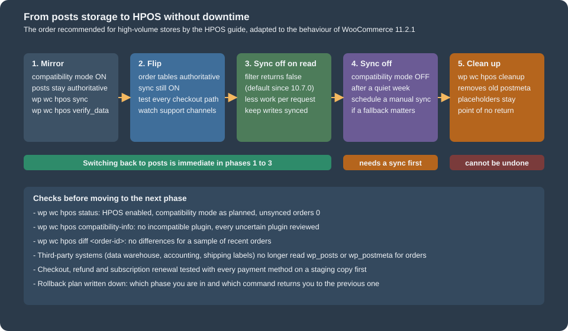

HPOS: High-Performance Order Storage
|
This content was generated with the assistance of AI and should be verified against the official documentation before being relied on in production. |
For fifteen years a WooCommerce order was a WordPress post of type shop_order, and everything the order knew (the billing
address, the total, the payment method) was a row in wp_postmeta. That design shared the posts and postmeta tables with every blog
post, page, product and plugin entity on the site, and it made order queries slow on stores with many orders.
High-Performance Order Storage (HPOS, formerly "custom order tables") gives orders their own tables and indexes.
It has been stable since WooCommerce 8.2 (released 2023-10-13) and is the storage for new stores; stores that
started earlier switch deliberately and with a safety net, which is what most of this page is about.
This page was written against WordPress 7.1.3 and WooCommerce 11.2.1 and checked on 2026-10-27. It covers the tables and the
roles of the old and new storage, how synchronisation works and how to run it, how to declare that a plugin supports HPOS, the
recipe book that tells extension authors what to change, the wp wc hpos commands, and a migration guide for code written when
orders were posts. The running example is the "gift note" of Pocket Coffee: a note a customer types for a gift order (for Grace, who
gets the beans) stored on the order, shown in a meta box and a list column, and written so that it works on both storages. Orders
are the CRUD objects described on CRUD Objects and Data Stores; the
architecture around them is on Architecture; the plugin skeleton and headers of the
example are explained in Extension Development. The wp wc command family as a
whole is on WC-CLI.
Everything below ran in the local test shop (WordPress 7.1.3, WooCommerce 11.2.1, PHP 8.3.36, MariaDB 11.8.9) with HPOS authoritative
and compatibility mode off, the state of a fresh HPOS store. The shop was not switched between storages: switching modes, enabling synchronisation
and the cleanup command would change data that other examples in the same shop use, so they are described from the source and the
documentation and marked as not run. The test orders use the billing address ada-hpos@example.test, which no other order of the shop uses.
What HPOS is, and its version history
HPOS replaces the posts-based storage with four tables that were designed for orders. The order keeps its ID, status, totals and customer in
wc_orders, its two addresses in wc_order_addresses, its internal fields in wc_order_operational_data and its custom fields in
wc_orders_meta. Order items stay in woocommerce_order_items. The goals stated by WooCommerce are scalability (dedicated tables and
indexes mean fewer reads and writes and fewer busy tables), reliability (targeted backups, and the possibility of read and write locks that
prevent race conditions) and simplicity (a schema you can browse and extend without wading through wp_posts).
| Release | HPOS milestone |
|---|---|
2022 |
Plan published (January) and early-testing call for the migration (May) on the developer blog. |
8.2.0 (2023-10-13) |
HPOS is released under the stable flag and is enabled by default for new installations. |
8.2.0 |
New query types for |
8.5.0 |
The actions |
8.6.0 |
The filter |
9.0.0 (2024-06-18) |
The release notes of this version list the HPOS cleanup command ( |
10.4.0 (2025-12-10) |
HPOS datastore caching leaves the experimental phase (the feature |
10.7.0 (2026-04-14) |
Synchronisation on read is off by default; an admin notice announces it. |
11.0.0 (2026-08-04) |
|
11.2.0 and 11.2.1 |
No HPOS storage change; 11.2.0 anchors day-precision date arguments of |
All new extension submissions to the Woo Marketplace must be HPOS-compatible, and an extension that declares itself incompatible blocks merchants from enabling HPOS while it is active, so declaring compatibility is part of the product, not a nicety (see Testing, Deployment and Marketplace).
Is HPOS on? A fresh scripted install says no
"Enabled by default for new installs" is true of the setup that a merchant goes through in the browser. In the test shop, a store created with
WP-CLI (wp core install, then wp plugin install woocommerce --activate) did not have HPOS: the option
woocommerce_custom_orders_table_enabled was no and the tables did not exist until wp wc hpos enable created them. The code that turns
HPOS on for new shops (WC_Install::maybe_enable_hpos(), run on woocommerce_newly_installed at priority 20) returns early unless all of
these hold:
-
woocommerce_inithas already fired when the check runs; -
the shop has no orders yet;
-
no active plugin is incompatible with HPOS, and no active plugin is "uncertain", that is has made no declaration;
-
the filter
woocommerce_enable_hpos_by_default_for_new_shopsreturnstrue(its default).
The cause of the scripted install was not isolated; the first condition, a check that runs before the activation finished, is the likely one. The practical rule is the same either way: after a scripted install or a deployment, check the state and enable HPOS explicitly. The first script asks the questions that matter:
<?php
use Automattic\WooCommerce\Internal\DataStores\Orders\DataSynchronizer;
use Automattic\WooCommerce\Utilities\FeaturesUtil;
use Automattic\WooCommerce\Utilities\OrderUtil;
printf( "HPOS authoritative: %s\n", var_export( OrderUtil::custom_orders_table_usage_is_enabled(), true ) );
printf( "feature custom_order_tables: %s\n", var_export( FeaturesUtil::feature_is_enabled( 'custom_order_tables' ), true ) );
printf( "compatibility mode (sync): %s\n", var_export( OrderUtil::custom_orders_table_data_sync_is_enabled(), true ) );
printf( "tables in sync: %s\n", var_export( OrderUtil::is_custom_order_tables_in_sync(), true ) );
printf( "datastore cache enabled: %s\n", var_export( OrderUtil::custom_orders_table_datastore_cache_enabled(), true ) );
printf( "orders table / meta table: %s / %s\n", OrderUtil::get_table_for_orders(), OrderUtil::get_table_for_order_meta() );
printf( "data store for 'order': %s\n", WC_Data_Store::load( 'order' )->get_current_class_name() );
printf( "data store for 'order-refund': %s\n", WC_Data_Store::load( 'order-refund' )->get_current_class_name() );
$synchronizer = wc_get_container()->get( DataSynchronizer::class );
printf( "background sync mode: %s\n", $synchronizer->get_background_sync_mode() );
printf( "default batch size: %d\n", $synchronizer->get_default_batch_size() );
foreach ( array( 'woocommerce_custom_orders_table_enabled', 'woocommerce_custom_orders_table_data_sync_enabled', 'woocommerce_custom_orders_table_background_sync_mode', 'woocommerce_hpos_datastore_caching_enabled', 'woocommerce_hpos_fts_index_enabled' ) as $option ) {
printf( "%-58s %s\n", $option, var_export( get_option( $option, '(not set)' ), true ) );
}HPOS authoritative: true
feature custom_order_tables: true
compatibility mode (sync): false
tables in sync: false
datastore cache enabled: false
orders table / meta table: wp_wc_orders / wp_wc_orders_meta
data store for 'order': Automattic\WooCommerce\Internal\DataStores\Orders\OrdersTableDataStore
data store for 'order-refund': Automattic\WooCommerce\Internal\DataStores\Orders\OrdersTableRefundDataStore
background sync mode: off
default batch size: 26
woocommerce_custom_orders_table_enabled 'yes'
woocommerce_custom_orders_table_data_sync_enabled '(not set)'
woocommerce_custom_orders_table_background_sync_mode '(not set)'
woocommerce_hpos_datastore_caching_enabled 'no'
woocommerce_hpos_fts_index_enabled 'no'The data store behind the key order is OrdersTableDataStore, refunds use OrdersTableRefundDataStore, the options that were never saved
simply do not exist ((not set)), and the default batch size is 26 because the order tables are authoritative (more on that in the synchronisation section).
The tables
The next figure shows the layout; the table afterwards lists every column of 11.2.1, taken from SHOW CREATE TABLE on the test shop (prefix wp_).
OrdersTableDataStore::get_all_table_names() returns the names, and OrderUtil::get_table_for_orders() and get_table_for_order_meta() return the ones in use.

| Table | Columns | Notes |
|---|---|---|
|
|
One row per order, refund ( |
|
|
Two rows per order; the pair |
|
|
Flags and amounts that the order uses internally. One row per order. |
|
|
The custom fields: everything that is not a prop of the order. Indexed on |
A few consequences follow from the schema. billing_email and customer_id are columns of the main table, so "orders of this customer" is an indexed read.
The address fields are not in the main table, so a query on billing_first_name joins wc_order_addresses. Totals are decimal columns: sorting and range queries on
total work without casting, unlike string-valued postmeta. The order items and their meta (woocommerce_order_items, woocommerce_order_itemmeta)
and the analytics lookup tables (wc_order_stats, wc_order_product_lookup, …) are not part of HPOS and did not move.
What the database looks like after an order
The plugin of this page places an order with CRUD calls only (the code is further down) and the next script then looks at every table:
order 438: status=processing total=40.30 EUR, 2 line items
1 x Starter kit (PC-KIT-CRUD)
2 x Single-origin beans - Colombia Huila, 250 g (PC-COL-250-CRUD)
gift note: Happy birthday, Grace!<?php
global $wpdb;
$order = wc_get_orders( array( 'billing_email' => 'ada-hpos@example.test', 'limit' => 1 ) )[0];
$id = $order->get_id();
echo "--- rows per HPOS table for order $id\n";
foreach ( array( 'wc_orders' => 'id', 'wc_order_addresses' => 'order_id', 'wc_order_operational_data' => 'order_id', 'wc_orders_meta' => 'order_id' ) as $table => $column ) {
$count = $wpdb->get_var( $wpdb->prepare( "SELECT COUNT(*) FROM {$wpdb->prefix}{$table} WHERE {$column} = %d", $id ) );
printf( "%-26s %d\n", $table, $count );
}
echo "--- wc_orders\n";
echo wp_json_encode( $wpdb->get_row( $wpdb->prepare( "SELECT id, status, currency, type, tax_amount, total_amount, customer_id, billing_email, payment_method FROM {$wpdb->prefix}wc_orders WHERE id = %d", $id ), ARRAY_A ) ), "\n";
echo "--- wc_order_addresses\n";
echo wp_json_encode( $wpdb->get_results( $wpdb->prepare( "SELECT address_type, first_name, last_name, city, country FROM {$wpdb->prefix}wc_order_addresses WHERE order_id = %d ORDER BY address_type", $id ), ARRAY_A ) ), "\n";
echo "--- wc_order_operational_data\n";
echo wp_json_encode( $wpdb->get_row( $wpdb->prepare( "SELECT created_via, woocommerce_version, prices_include_tax, order_key IS NOT NULL AS has_order_key, date_paid_gmt IS NOT NULL AS has_paid_date FROM {$wpdb->prefix}wc_order_operational_data WHERE order_id = %d", $id ), ARRAY_A ) ), "\n";
echo "--- wc_orders_meta\n";
foreach ( $wpdb->get_results( $wpdb->prepare( "SELECT meta_key, LEFT(meta_value, 40) AS meta_value FROM {$wpdb->prefix}wc_orders_meta WHERE order_id = %d ORDER BY meta_key", $id ), ARRAY_A ) as $row ) {
echo ' ', wp_json_encode( $row ), "\n";
}
echo "--- order items (unchanged tables)\n";
echo $wpdb->get_var( $wpdb->prepare( "SELECT COUNT(*) FROM {$wpdb->prefix}woocommerce_order_items WHERE order_id = %d", $id ) ), " rows in woocommerce_order_items\n";
echo "--- the posts side\n";
echo wp_json_encode( $wpdb->get_row( $wpdb->prepare( "SELECT ID, post_type, post_status FROM {$wpdb->posts} WHERE ID = %d", $id ), ARRAY_A ) ), "\n";
echo 'postmeta rows for the same ID: ', $wpdb->get_var( $wpdb->prepare( "SELECT COUNT(*) FROM {$wpdb->postmeta} WHERE post_id = %d", $id ) ), "\n";
echo "get_post_meta( id, '_order_total' ): ", var_export( get_post_meta( $id, '_order_total', true ), true ), ' $order->get_total(): ', $order->get_total(), "\n";
echo "get_post_meta( id, '_pc_gift_note' ): ", var_export( get_post_meta( $id, '_pc_gift_note', true ), true ), ' $order->get_meta(): ', $order->get_meta( '_pc_gift_note' ), "\n";
echo 'get_post_type( id ): ', get_post_type( $id ), ' OrderUtil::get_order_type( id ): ', Automattic\WooCommerce\Utilities\OrderUtil::get_order_type( $id ), "\n";--- rows per HPOS table for order 438
wc_orders 1
wc_order_addresses 2
wc_order_operational_data 1
wc_orders_meta 3
--- wc_orders
{"id":"438","status":"wc-processing","currency":"EUR","type":"shop_order","tax_amount":"0.00000000","total_amount":"40.30000000","customer_id":"0","billing_email":"ada-hpos@example.test","payment_method":"bacs"}
--- wc_order_addresses
[{"address_type":"billing","first_name":"Ada","last_name":"Lovelace","city":"Madrid","country":"ES"},{"address_type":"shipping","first_name":"Ada","last_name":"Lovelace","city":"Madrid","country":"ES"}]
--- wc_order_operational_data
{"created_via":"","woocommerce_version":"11.2.1","prices_include_tax":"0","has_order_key":"1","has_paid_date":"1"}
--- wc_orders_meta
{"meta_key":"_billing_address_index","meta_value":"Ada Lovelace Calle de Alcala 1 Madrid "}
{"meta_key":"_pc_gift_note","meta_value":"Happy birthday, Grace!"}
{"meta_key":"_shipping_address_index","meta_value":"Ada Lovelace Calle de Alcala 1 Madrid "}
--- order items (unchanged tables)
2 rows in woocommerce_order_items
--- the posts side
{"ID":"438","post_type":"shop_order_placehold","post_status":"draft"}
postmeta rows for the same ID: 16
get_post_meta( id, '_order_total' ): '' $order->get_total(): 40.30
get_post_meta( id, '_pc_gift_note' ): '' $order->get_meta(): Happy birthday, Grace!
get_post_type( id ): shop_order_placehold OrderUtil::get_order_type( id ): shop_orderOrder 438 exists once in wc_orders, twice in wc_order_addresses, once in wc_order_operational_data and three times in wc_orders_meta: the two address index rows and the gift note. Its two line items sit in the unchanged woocommerce_order_items table. In wp_posts there is a row with the same ID, but its type is shop_order_placehold and it has
no total and no gift note. Two things in the last lines need attention. get_post_type() answers shop_order_placehold while OrderUtil::get_order_type() answers
shop_order, so only the second can be used to ask what an ID is. And the placeholder carries 16 postmeta rows, the billing and shipping address fields, which were written when the order was created (the code path that does it was not traced); the legacy section below shows why those rows are a trap, not a feature.
Authoritative and backup storage
While HPOS exists on a store, the two sets of tables have roles. The authoritative tables are the working tables: orders are read from them and written to them. The
backup tables receive a copy of the authoritative data whenever synchronisation happens. The option woocommerce_custom_orders_table_enabled decides who is
authoritative: yes means the HPOS tables (the posts tables are the backup), no means the posts tables. In 11.2.1 the setting is the radio button "Order data storage" in
WooCommerce > Settings > Advanced > Features, with the labels "WordPress posts storage (legacy)" and "High-performance order storage (recommended)".

The mechanism that makes the choice effective is small. CustomOrdersTableController hooks the filter woocommerce_order_data_store (and woocommerce_order-refund_data_store)
at priority 999, so WC_Data_Store::load( 'order' ) returns OrdersTableDataStore when the option is yes and WC_Order_Data_Store_CPT otherwise. Everything that uses
wc_get_order(), wc_get_orders() or WC_Order goes through that store, which is the whole reason HPOS did not break the extensions that used the objects (see
CRUD Objects and Data Stores).
Two safeguards protect the data. WooCommerce does not let you change the authoritative storage while orders are waiting to be synchronised: the radio buttons are disabled and the screen
offers "Sync orders now". The filter wc_allow_changing_orders_storage_while_sync_is_pending (since 8.3.0) overrides the rule, and its documentation says it exists for development
environments only and that using it in production can corrupt or lose order data. And the radio button for HPOS is disabled while a plugin that declared itself incompatible is active.
Synchronisation
Synchronisation applies the pending changes of the authoritative tables to the backup tables. An order is pending synchronisation when it was created, changed or deleted in the
authoritative store and the backup store has not seen it yet. The setting that keeps the stores equal is "Enable compatibility mode (Synchronize orders between High-performance order
storage and WordPress posts storage)", stored in the option woocommerce_custom_orders_table_data_sync_enabled (yes or no). The same function has had other names: "compatibility mode" in the settings,
"data sync" in the code and option, "sync" on the command line.
The ways an order reaches the backup store, and what each costs:
| Mechanism | Behaviour |
|---|---|
Immediate synchronisation |
With compatibility mode on, every write of an order to the authoritative store is copied to the backup store in the same request (when the posts are the backup this is called backfilling). Writes become more expensive, which is why large stores turn it off once HPOS is proven. |
Manual synchronisation |
|
Scheduled synchronisation |
When compatibility mode is switched on while orders are pending, WooCommerce enqueues the |
Background synchronisation |
11.2.1 reads the option |
Synchronisation on read |
With compatibility mode on, reading an order can refresh it from the posts table when the post is newer. It is off by default since 10.7.0 because it can let stale posts data override correct HPOS data. The filter |
Deletion synchronisation |
Missing rows are ambiguous: an order absent from the backup may be new, or may have been deleted from the authoritative store. WooCommerce therefore records deletions as |
Placeholder posts
Order IDs must be the same in both stores or synchronisation could not match rows. While the posts are authoritative this is trivial. While HPOS is authoritative a
non-order post could take an ID that an HPOS order would need later. WooCommerce prevents it by creating a placeholder row of type shop_order_placehold in wp_posts for every new order (when
compatibility mode is off), which reserves the ID. When a sync happens the placeholder is filled in and becomes a shop_order. The test order above shows one, with status draft. In 11.2.1 creating
an order also fires save_post once for the placeholder (type shop_order_placehold) but never save_post_shop_order:
<?php
$log = array();
$push = static function ( $label ) use ( &$log ) {
return static function () use ( &$log, $label ) {
$log[] = $label;
};
};
add_action( 'save_post', static function ( $id, $post ) use ( &$log ) { $log[] = 'save_post (' . $post->post_type . ')'; }, 10, 2 );
add_action( 'save_post_shop_order', $push( 'save_post_shop_order' ) );
add_action( 'woocommerce_new_order', $push( 'woocommerce_new_order' ) );
add_action( 'woocommerce_update_order', $push( 'woocommerce_update_order' ) );
add_action( 'woocommerce_order_status_changed', $push( 'woocommerce_order_status_changed' ) );
$order = wc_create_order( array( 'status' => 'pending' ) );
$order->set_billing_email( 'ada-hpos-hooks@example.test' );
$order->save();
$order->update_status( 'completed' );
echo implode( "\n", $log ), "\n";
$order->delete( true );save_post (shop_order_placehold)
woocommerce_new_order
woocommerce_update_order
woocommerce_update_order
woocommerce_order_status_changedThe order of the lines is the order of the events. Updates fire only the WooCommerce hooks. Code that hooked save_post_shop_order or wp_insert_post for orders in the posts era will not run
on an HPOS store; use woocommerce_new_order, woocommerce_update_order, woocommerce_order_status_* or woocommerce_after_order_object_save.
Enabling, switching and disabling
On a new store
Check first, then enable explicitly when a scripted install did not do it. The command creates the tables when they do not exist and refuses to enable when an incompatible plugin is active (override with --ignore-plugin-compatibility):
wp wc hpos status
wp wc hpos enable --for-new-shopThe second command was not run on the test shop, where HPOS was already on.
Source: WooCommerce docs: HPOS CLI tools
On an existing store
An existing store keeps the posts storage until someone switches it, and the switch needs both stores to be equal first. For a store of any size the safe order, described by the "large store" guide of the WooCommerce documentation, has five phases. The figure puts it on one page; the text after it adds the reasoning.

-
Test on a copy. Run the store on a local or staging copy with every plugin and the custom code, try checkout with each payment method, refunds, and subscriptions if you use them, with compatibility mode both on and off.
-
Mirror. On production switch compatibility mode on while "WordPress posts storage" stays authoritative. New and changed orders now appear in the HPOS tables. Migrate the past with
wp wc hpos syncinstead of waiting for the background batches; time it on staging first (the guide reports about a week for a store with nine million orders). Interrupting the command or switching the mode off is safe and the work resumes later. Verify withwp wc hpos verify_data. -
Flip. Choose "High-performance order storage" with compatibility mode still on. If anything fails, switching back is immediate and loses nothing, because the posts tables have been kept current. Test the critical flows and watch the support channels. Plan to be online for a while, and prefer a quiet period; both directions are hot switches without downtime.
-
Sync off on read, then off on write. Disable synchronisation on read (since 10.7.0 this is already the default; before it,
add_filter( 'woocommerce_hpos_enable_sync_on_read', '__return_false' )), wait, and when the shop behaves, switch compatibility mode off. The guide’s own store did the second step a week after the first and kept a manualwp wc hpos syncon a schedule to retain the option to fall back. -
Clean up (optional).
wp wc hpos cleanupremoves order data from the legacy tables; it is the one step that cannot be undone, and it keeps the placeholders.
Third-party systems matter as much as plugins: a data warehouse, an accounting export or a shipping-label tool that reads wp_posts and wp_postmeta directly will stop seeing new orders, and that
failure shows up in the code audit of no plugin. Inventory them before phase 3.
Disabling
Disabling is the same trip in reverse: make sure the stores are in sync (turn compatibility mode on, let the sync finish), then choose "WordPress posts storage". wp wc hpos disable refuses while orders are pending
sync, and --with-sync also turns compatibility mode off. Re-enabling later follows the steps above. Disabling, enabling, sync in either direction and cleanup were not run on the test shop, which is shared by other examples; their behaviour is
taken from wp wc hpos <command> --help, the 11.2.1 source and the documentation.
Declaring compatibility
WooCommerce cannot know that a plugin reads orders correctly, so each plugin says so. The declaration goes in the main plugin file, runs on before_woocommerce_init and names a feature
(custom_order_tables for HPOS, cart_checkout_blocks for the Cart and Checkout blocks) and a boolean:
use Automattic\WooCommerce\Utilities\FeaturesUtil;
add_action(
'before_woocommerce_init',
static function () {
if ( class_exists( FeaturesUtil::class ) ) {
FeaturesUtil::declare_compatibility( 'custom_order_tables', __FILE__, true ); // false = incompatible
FeaturesUtil::declare_compatibility( 'cart_checkout_blocks', __FILE__, true );
}
}
);The rules, from the source of FeaturesUtil and FeaturesController:
-
declare_compatibility( $feature_id, $plugin_file, $positive_compatibility = true )returnstrueon success andfalsewhen the feature does not exist or the call is not made insidebefore_woocommerce_init. -
Pass
__FILE__, or'my-plugin/my-plugin.php'when the declaration lives outside the main file. -
Declaring
falsestates that the plugin does not support the feature. WooCommerce then warns on the Plugins screen and, while the plugin is active, disables the HPOS radio button. -
No declaration means "uncertain". Uncertain plugins are listed separately, and (see above) they stop HPOS from being enabled by default on a new shop.
-
The warnings on the Plugins screen appear only for plugins that declare
WC tested up toin their header, because many WordPress plugins have nothing to do with WooCommerce. -
class_exists( FeaturesUtil::class )protects against WooCommerce being inactive or too old to have the class; theRequires Plugins: woocommerceheader makes WordPress enforce the dependency from 6.5 on. -
The Plugins screen can be filtered to the incompatible ones with
wp-admin/plugins.php?plugin_status=incompatible_with_feature&feature_id=custom_order_tables.
The read side of the API tells what a store has declared:
<?php
use Automattic\WooCommerce\Utilities\FeaturesUtil;
$mine = FeaturesUtil::get_compatible_features_for_plugin( 'pocket-coffee-hpos/pocket-coffee-hpos.php' );
echo 'declared compatible: ', implode( ', ', $mine['compatible'] ), "\n";
echo 'declared incompatible: ', wp_json_encode( $mine['incompatible'] ), "\n";
echo 'features without a declaration: ', count( $mine['uncertain'] ), "\n";
$for_hpos = FeaturesUtil::get_compatible_plugins_for_feature( 'custom_order_tables' );
foreach ( $for_hpos as $state => $plugins ) {
printf( "%-12s %d plugins\n", $state, count( $plugins ) );
}
$ok = FeaturesUtil::declare_compatibility( 'custom_order_tables', WP_PLUGIN_DIR . '/pocket-coffee-hpos/pocket-coffee-hpos.php', true );
echo 'declare_compatibility() after init: ', var_export( $ok, true ), "\n";
echo 'registered features: ', count( FeaturesUtil::get_features( true ) ), "\n";declared compatible: cart_checkout_blocks, custom_order_tables
declared incompatible: []
features without a declaration: 30
compatible 10 plugins
incompatible 0 plugins
uncertain 2 plugins
declare_compatibility() after init: false
registered features: 32get_compatible_features_for_plugin() is only available after woocommerce_init, which is why the later declare_compatibility() call from the script returned false (it is not inside the hook). The registry of 11.2.1 holds 32 features, among
them custom_order_tables, cart_checkout_blocks, hpos_datastore_caching, hpos_fts_indexes, analytics, order_attribution, blueprint and cost_of_goods_sold; the full list is array_keys( FeaturesUtil::get_features( true ) ).
On the command line the same information is wp wc hpos compatibility-info:
10 compatible plugins found:
EC Hello
Pocket Coffee Analytics
Pocket Coffee Architecture
Pocket Coffee CRUD
Pocket Coffee Checkout Blocks
Pocket Coffee HPOS
Pocket Coffee Hooks
Pocket Coffee Products
Pocket Coffee REST API
Pocket Coffee Settings
0 incompatible plugins found
0 uncertain plugins foundPlugins that are inactive count as "uncertain" in this report unless you pass --include-inactive; --display-filenames prints plugin files instead of names. The list shows the other test plugins of the shop, all of them
compatible because each one declares it.
The recipe book: making an extension HPOS-compatible
The official recipe book for extension authors is short, and its rules are the content of this section. The principle is stated once: use WooCommerce APIs, not WordPress APIs, to access order data.
Detecting the storage
CRUD code needs no detection. Only code that must choose between two behaviours does, for example an SQL query written for speed or a hook that exists on one screen only:
use Automattic\WooCommerce\Utilities\OrderUtil;
if ( OrderUtil::custom_orders_table_usage_is_enabled() ) {
// HPOS is authoritative.
} else {
// Posts storage.
}OrderUtil is the public helper for this and for several neighbours, all of them verified on the test shop:
| Method | Use |
|---|---|
|
HPOS is the authoritative storage. |
|
Compatibility mode is on (since 11.0.0). Cheap. |
|
Compatibility mode is on and no order is pending. Runs a query; avoid it in hot paths. |
|
The datastore cache or the order object cache is in use. |
|
The table in use for orders and for their meta; for raw SQL only. |
|
What an ID is; replaces |
|
Screen ID of the order edit screen, for |
|
The URLs of the edit and new-order screens. |
|
Screen checks for admin code. |
|
Accept either a |
|
Counts of orders of a type (since 8.7.0). |
Auditing a code base
Start with a search. The recipe book gives a regular expression for the functions that must not touch orders and another for the post-list and post-edit hooks of the order screens. The first is meant for the whole code base, with many false positives:
wpdb|get_post|get_post_field|get_post_status|get_post_type|get_post_type_object|get_posts|metadata_exists|get_post_meta|get_metadata|get_metadata_raw|get_metadata_default|get_metadata_by_mid|wp_insert_post|add_metadata|add_post_meta|wp_update_post|update_post_meta|update_metadata|update_metadata_by_mid|delete_metadata|delete_post_meta|delete_metadata_by_mid|delete_post_meta_by_key|wp_delete_post|wp_trash_post|wp_untrash_post|wp_transition_post_status|clean_post_cache|update_post_caches|update_postmeta_cache|post_exists|wp_count_post|shop_orderpost_updated_messages|do_meta_boxes|enter_title_here|edit_form_before_permalink|edit_form_after_title|edit_form_after_editor|submitpage_box|submitpost_box|edit_form_advanced|dbx_post_sidebar|manage_shop_order_posts_columns|manage_shop_order_posts_custom_columnGo through each match and decide whether it concerns an order. Most do not. Those that do are rewritten with the objects. The replacements:
| Posts-era code | HPOS-ready code |
|---|---|
|
|
|
|
|
|
|
|
|
|
|
|
|
CRUD; or, for SQL you cannot avoid, |
|
the same call with |
|
|
Calling save() is relatively expensive; set everything first and save once.
Not reading the post table directly
The recipe book also warns that, with HPOS authoritative, reading the posts table "may mean reading an outdated order" and writing to it "may mean updating an order that will not be read". Code that bypasses the objects can therefore appear to work. The next sections show what that looks like.
A complete HPOS-ready extension: the gift note
The plugin below is the whole example: the compatibility declaration, a helper that writes the note with CRUD calls, the "order placed" log line of the Pocket Coffee thread (on woocommerce_order_status_processing, which every storage fires with
the complete order), a meta box on the order edit screen, the save handler, a list column, and the one function that needs SQL and therefore branches on the storage. It passes PHP_CodeSniffer with the WooCommerce-Core and WordPress-Docs standards without findings.
<?php
/**
* Plugin Name: Pocket Coffee HPOS
* Description: Gift note on orders, written for High-Performance Order Storage and legacy posts storage alike.
* Version: 0.1.0
* Requires at least: 7.0
* Requires PHP: 7.4
* Requires Plugins: woocommerce
* WC requires at least: 10.0
* WC tested up to: 11.2
* Text Domain: pocket-coffee-hpos
* License: GPL-2.0-or-later
*
* @package PocketCoffee\Hpos
*/
defined( 'ABSPATH' ) || exit;
use Automattic\WooCommerce\Utilities\FeaturesUtil;
use Automattic\WooCommerce\Utilities\OrderUtil;
const POCKET_COFFEE_HPOS_GIFT_NOTE = '_pc_gift_note';
// 1. Tell WooCommerce this plugin works with HPOS (and with the Cart and Checkout blocks).
add_action(
'before_woocommerce_init',
static function () {
if ( class_exists( FeaturesUtil::class ) ) {
FeaturesUtil::declare_compatibility( 'custom_order_tables', __FILE__, true );
FeaturesUtil::declare_compatibility( 'cart_checkout_blocks', __FILE__, true );
}
}
);
/**
* Stores the gift note on the order. update_meta_data() + save() works on both storages.
*
* @param WC_Order $order Order.
* @param string $note Note typed by the customer.
*/
function pocket_coffee_hpos_set_gift_note( WC_Order $order, $note ) {
$note = sanitize_textarea_field( $note );
if ( '' === $note ) {
$order->delete_meta_data( POCKET_COFFEE_HPOS_GIFT_NOTE );
} else {
$order->update_meta_data( POCKET_COFFEE_HPOS_GIFT_NOTE, $note );
}
$order->save();
}
// 2. Log "order placed" with the order number and total once the order is paid or accepted.
add_action(
'woocommerce_order_status_processing',
static function ( $order_id, $order ) {
wc_get_logger()->info(
sprintf( 'Order %s placed: %s %s', $order->get_order_number(), $order->get_total(), $order->get_currency() ),
array( 'source' => 'pocket-coffee-hpos' )
);
},
10,
2
);
// 3. Meta box on the order edit screen: the screen id differs between storages.
add_action(
'add_meta_boxes',
static function () {
add_meta_box(
'pocket-coffee-gift-note',
__( 'Gift note', 'pocket-coffee-hpos' ),
'pocket_coffee_hpos_render_gift_note_box',
OrderUtil::get_order_admin_screen(), // woocommerce_page_wc-orders with HPOS, shop_order without.
'side',
'default'
);
}
);
/**
* Renders the meta box. The argument is a WP_Post on the legacy screen and a WC_Order on the HPOS screen.
*
* @param WP_Post|WC_Order $post_or_order_object The object WordPress or WooCommerce passes.
*/
function pocket_coffee_hpos_render_gift_note_box( $post_or_order_object ) {
$order = OrderUtil::init_theorder_object( $post_or_order_object );
if ( ! $order ) {
return;
}
wp_nonce_field( 'pocket_coffee_gift_note', 'pocket_coffee_gift_note_nonce' );
printf(
'<textarea name="pocket_coffee_gift_note" rows="3" style="width:100%%">%s</textarea>',
esc_textarea( (string) $order->get_meta( POCKET_COFFEE_HPOS_GIFT_NOTE ) )
);
}
// 4. Save it. Both order edit screens fire this action with the order ID; the second argument
// is a WP_Post on the legacy screen and a WC_Order on the HPOS screen, so load the order by ID.
add_action(
'woocommerce_process_shop_order_meta',
static function ( $order_id ) {
$nonce = isset( $_POST['pocket_coffee_gift_note_nonce'] ) ? sanitize_text_field( wp_unslash( $_POST['pocket_coffee_gift_note_nonce'] ) ) : '';
$order = wc_get_order( $order_id );
if ( ! $order || ! wp_verify_nonce( $nonce, 'pocket_coffee_gift_note' ) || ! isset( $_POST['pocket_coffee_gift_note'] ) ) {
return;
}
pocket_coffee_hpos_set_gift_note( $order, wp_unslash( $_POST['pocket_coffee_gift_note'] ) ); // phpcs:ignore WordPress.Security.ValidatedSanitizedInput.InputNotSanitized -- sanitized in the function.
}
);
// 5. A "Gift" column in the order list: one pair of hooks per list screen.
add_filter(
'woocommerce_shop_order_list_table_columns', // HPOS list table.
'pocket_coffee_hpos_add_gift_column'
);
add_filter(
'manage_edit-shop_order_columns', // Legacy posts list table.
'pocket_coffee_hpos_add_gift_column'
);
/**
* Adds the Gift column after the status column.
*
* @param array $columns Columns.
* @return array
*/
function pocket_coffee_hpos_add_gift_column( $columns ) {
$result = array();
foreach ( $columns as $key => $label ) {
$result[ $key ] = $label;
if ( 'order_status' === $key ) {
$result['pocket_coffee_gift'] = __( 'Gift', 'pocket-coffee-hpos' );
}
}
return $result;
}
/**
* Prints the cell for one order.
*
* @param string $column Column id.
* @param WC_Order|int $order Order object (HPOS) or post ID (legacy).
*/
function pocket_coffee_hpos_render_gift_cell( $column, $order = null ) {
if ( 'pocket_coffee_gift' !== $column ) {
return;
}
$order = $order instanceof WC_Order ? $order : wc_get_order( $order ? $order : get_the_ID() );
echo $order && $order->get_meta( POCKET_COFFEE_HPOS_GIFT_NOTE ) ? esc_html__( 'Yes', 'pocket-coffee-hpos' ) : '–';
}
add_action( 'woocommerce_shop_order_list_table_custom_column', 'pocket_coffee_hpos_render_gift_cell', 10, 2 );
add_action( 'manage_shop_order_posts_custom_column', 'pocket_coffee_hpos_render_gift_cell', 10, 2 );
/**
* Counts orders per status with SQL, the one case where the storage matters.
*
* @return array<string,int> Status (with the wc- prefix) => count.
*/
function pocket_coffee_hpos_count_orders_by_status() {
global $wpdb;
if ( OrderUtil::custom_orders_table_usage_is_enabled() ) {
$table = OrderUtil::get_table_for_orders(); // For example wp_wc_orders.
$rows = $wpdb->get_results( "SELECT status, COUNT(*) AS total FROM {$table} WHERE type = 'shop_order' GROUP BY status", ARRAY_A ); // phpcs:ignore WordPress.DB.PreparedSQL.InterpolatedNotPrepared -- Table name comes from WooCommerce.
} else {
$rows = $wpdb->get_results( "SELECT post_status AS status, COUNT(*) AS total FROM {$wpdb->posts} WHERE post_type = 'shop_order' GROUP BY post_status", ARRAY_A );
}
return array_map( 'intval', wp_list_pluck( $rows, 'total', 'status' ) );
}How the pieces follow the rules of the recipe book:
-
The meta box registers for
OrderUtil::get_order_admin_screen(), which iswoocommerce_page_wc-orderson HPOS andshop_orderon posts. The callback receives aWP_Poston one screen and aWC_Orderon the other, andOrderUtil::init_theorder_object()turns either into an order. The helper throws outside the admin, so it is called insideadd_meta_boxes, never at load time. -
Saving uses
woocommerce_process_shop_order_meta, which both edit screens fire with the order ID. The second argument is aWP_Poston the legacy screen and aWC_Orderon the HPOS screen, so the handler ignores it and loads the order withwc_get_order(). Nonce and sanitisation are in the handler, and the helper only writes. -
The list column has one pair of hooks per list table. The two
add_filterandadd_actionpairs are the price of supporting both storages and can be dropped when only HPOS stores matter. -
The log line goes on a status hook, not on
woocommerce_new_order, because at creation the order may still be empty. -
pocket_coffee_hpos_count_orders_by_status()is the only code that mentions a table, and it asks WooCommerce which one, with the right column names for each storage.
The orders are placed with the function below (one CRUD object, no post function), which the examples call:
<?php
/**
* Places a Pocket Coffee order with CRUD objects only: no post or postmeta function is involved.
*
* @package PocketCoffee\Hpos
*/
/**
* Creates a processing order.
*
* @param array<int,int> $lines Product or variation ID => quantity.
* @param string $email Billing and shipping e-mail.
* @param string $gift_note Optional gift note.
* @return int Order ID.
*/
function pocket_coffee_hpos_place_order( array $lines, $email, $gift_note = '' ) {
$order = wc_create_order( array( 'status' => 'pending' ) );
foreach ( $lines as $product_id => $quantity ) {
$order->add_product( wc_get_product( $product_id ), $quantity );
}
$address = array(
'first_name' => 'Ada',
'last_name' => 'Lovelace',
'email' => $email,
'address_1' => 'Calle de Alcala 1',
'city' => 'Madrid',
'state' => 'M',
'postcode' => '28014',
'country' => 'ES',
);
$order->set_address( $address, 'billing' );
$order->set_address( $address, 'shipping' );
$order->set_payment_method( 'bacs' );
$order->calculate_totals();
$order->save();
if ( '' !== $gift_note ) {
pocket_coffee_hpos_set_gift_note( $order, $gift_note );
}
$order->update_status( 'processing' ); // Saves the order and fires woocommerce_order_status_processing.
return $order->get_id();
}The exercise of the user interface was done without a browser. The meta box, the save handler and the column were run by calling their callbacks with a real order and a nonce created for the administrator, after loading the admin helper file that the real screen has loaded. That is enough to check the data path and not enough to claim the pixels:
<?php
use Automattic\WooCommerce\Utilities\OrderUtil;
set_current_screen( 'dashboard' ); // Pretend to be in wp-admin: the screen helper throws outside it.
require_once WC_ABSPATH . 'includes/admin/wc-admin-functions.php';
$order = wc_get_orders( array( 'billing_email' => 'ada-hpos@example.test', 'limit' => 1 ) )[0];
$id = $order->get_id();
echo 'order edit screen id: ', OrderUtil::get_order_admin_screen(), "\n";
echo 'edit URL: ', OrderUtil::get_order_admin_edit_url( $id ), "\n";
ob_start();
pocket_coffee_hpos_render_gift_note_box( $order );
$box = ob_get_clean();
echo 'meta box (WC_Order): ', preg_replace( '/value="[^"]+"/', 'value="..."', $box ), "\n";
$_POST['pocket_coffee_gift_note_nonce'] = wp_create_nonce( 'pocket_coffee_gift_note' );
$_POST['pocket_coffee_gift_note'] = 'Happy birthday, Grace! Roasted on 2026-10-26.';
do_action( 'woocommerce_process_shop_order_meta', $id, $order );
echo 'saved through the hook: ', wc_get_order( $id )->get_meta( '_pc_gift_note' ), "\n";
$_POST = array( 'pocket_coffee_gift_note' => 'no nonce, must be ignored' );
do_action( 'woocommerce_process_shop_order_meta', $id, $order );
echo 'without a nonce: ', wc_get_order( $id )->get_meta( '_pc_gift_note' ), "\n";
$columns = apply_filters( 'woocommerce_shop_order_list_table_columns', array( 'order_number' => 'Order', 'order_status' => 'Status', 'order_total' => 'Total' ) );
echo 'list columns: ', implode( ', ', array_keys( $columns ) ), "\n";
ob_start();
do_action( 'woocommerce_shop_order_list_table_custom_column', 'pocket_coffee_gift', $order );
$cell = ob_get_clean();
echo 'gift cell: ', $cell, "\n";order edit screen id: woocommerce_page_wc-orders
edit URL: http://localhost:8081/wp-admin/admin.php?page=wc-orders&action=edit&id=438
meta box (WC_Order): <input type="hidden" id="pocket_coffee_gift_note_nonce" name="pocket_coffee_gift_note_nonce" value="..." /><input type="hidden" name="_wp_http_referer" value="" /><textarea name="pocket_coffee_gift_note" rows="3" style="width:100%">written with update_meta_data()</textarea>
saved through the hook: Happy birthday, Grace! Roasted on 2026-10-26.
without a nonce: Happy birthday, Grace! Roasted on 2026-10-26.
list columns: order_number, order_status, pocket_coffee_gift, order_total
gift cell: YesThe nonce check is visible in the output: the second save, without a nonce, changed nothing. The "order placed" line of the plugin went to the WooCommerce log under the source pocket-coffee-hpos; the next script prints the line of the order created above from wp-content/uploads/wc-logs:
<?php
$order = wc_get_orders( array( 'billing_email' => 'ada-hpos@example.test', 'limit' => 1 ) )[0];
foreach ( glob( WC_LOG_DIR . 'pocket-coffee-hpos-*.log' ) as $file ) {
foreach ( file( $file ) as $line ) {
if ( false !== strpos( $line, 'Order ' . $order->get_id() . ' ' ) ) {
echo preg_replace( '/^\S+ /', '', trim( $line ) ), "\n";
}
}
}INFO Order 438 placed: 40.30 EURThe SQL helper and the equivalent CRUD call:
<?php
echo wp_json_encode( pocket_coffee_hpos_count_orders_by_status() ), "\n";
echo 'wc_get_orders( processing ): ', count( wc_get_orders( array( 'status' => 'processing', 'limit' => -1, 'return' => 'ids' ) ) ), "\n";{"wc-cancelled":2,"wc-checkout-draft":13,"wc-completed":3,"wc-on-hold":18,"wc-processing":9}
wc_get_orders( processing ): 9Querying orders on HPOS
wc_get_orders() and WC_Order_Query are the same functions as on the posts storage and take the arguments described in
CRUD Objects and Data Stores. HPOS adds three query types, all arguments of the same call and all inspired by WP_Query:
| Argument | Meaning |
|---|---|
|
Conditions on custom fields. Each clause has |
|
The same syntax for order fields ( |
|
The |
<?php
$ids = static fn( array $args ) => wp_json_encode( wc_get_orders( array_merge( $args, array( 'return' => 'ids', 'limit' => -1 ) ) ) );
$ada = array( 'billing_email' => 'ada-hpos@example.test' );
echo "--- the arguments every storage understands\n";
echo 'by email: ', $ids( $ada ), "\n";
echo 'processing + email: ', $ids( array_merge( $ada, array( 'status' => 'processing' ) ) ), "\n";
echo "--- query types that need HPOS\n";
echo 'meta_query EXISTS: ', $ids( array( 'meta_query' => array( array( 'key' => '_pc_gift_note', 'compare' => 'EXISTS' ) ), 'billing_email' => 'ada-hpos@example.test' ) ), "\n";
echo 'meta_query LIKE: ', $ids( array( 'meta_query' => array( array( 'key' => '_pc_gift_note', 'value' => 'birthday', 'compare' => 'LIKE' ) ) ) ), "\n";
echo 'field_query OR: ', $ids(
array_merge(
$ada,
array(
'field_query' => array(
'relation' => 'OR',
array( 'field' => 'total', 'value' => '30', 'compare' => '>=', 'type' => 'NUMERIC' ),
array( 'field' => 'shipping_total', 'value' => '5', 'compare' => '<', 'type' => 'NUMERIC' ),
),
)
)
), "\n";
echo 'date_query (paid): ', $ids( array_merge( $ada, array( 'date_query' => array( array( 'column' => 'date_paid_gmt', 'after' => '1 hour ago' ) ) ) ) ), "\n";
echo "--- a custom argument\n";
add_filter(
'woocommerce_order_query_args',
static function ( $query_args ) {
if ( ! empty( $query_args['has_gift_note'] ) ) {
$query_args['meta_query'][] = array(
'key' => '_pc_gift_note',
'compare' => 'EXISTS',
);
}
unset( $query_args['has_gift_note'] );
return $query_args;
}
);
echo 'has_gift_note: ', $ids( array_merge( $ada, array( 'has_gift_note' => true ) ) ), "\n";
echo "--- pagination\n";
$page = wc_get_orders( array_merge( $ada, array( 'limit' => 1, 'paginate' => true, 'return' => 'ids' ) ) );
printf( "total=%d pages=%d orders=%s\n", $page->total, $page->max_num_pages, wp_json_encode( $page->orders ) );--- the arguments every storage understands
by email: [438]
processing + email: [438]
--- query types that need HPOS
meta_query EXISTS: [438]
meta_query LIKE: [438]
field_query OR: [438]
date_query (paid): [438]
--- a custom argument
has_gift_note: [438]
--- pagination
total=1 pages=1 orders=[438]Notes on the filters, from the source of OrdersTableQuery and OrdersTableDataStore:
-
woocommerce_order_query_argsruns for every storage and is the place to translate a custom argument into a supported one (ashas_gift_noteis above). Remove the custom key afterwards, as the example does. -
woocommerce_orders_table_datastore_get_orders_query(since 10.4.0) filters the arguments just before the HPOS query is built. -
woocommerce_orders_table_query_clausesreceives the SQL pieces (fields,join,where,groupby,orderby,limits) for last-minute edits;woocommerce_orders_table_query_sqlandwoocommerce_orders_table_query_count_sqlreceive the finished SQL. -
woocommerce_hpos_pre_query(since 8.2.0) can return a ready result (orders,found_orders,max_num_pages) and skip the query, which is how an external search index can answer order queries. -
woocommerce_orders_table_datastore_extra_db_rows_for_orderlets an extension write its own rows when an order is saved; each entry names the table, the row and its format.
Migrating book-era code that reads postmeta
Recipes from the WooCommerce 2.x and early 3.x books are written for orders that are posts. They are common in old themes, "code snippets" plugins and agency plugins, and they fail on HPOS in three different ways, which the next script reproduces on a real order. Each line is code a recipe of that era would contain; the CRUD equivalents are run in the same script.
<?php
global $wpdb;
$order = wc_get_orders( array( 'billing_email' => 'ada-hpos@example.test', 'limit' => 1 ) )[0];
$order_id = $order->get_id();
echo "=== book-era code, written for orders stored as posts\n";
echo '_order_total: ', var_export( get_post_meta( $order_id, '_order_total', true ), true ), "\n";
echo '_billing_email: ', var_export( get_post_meta( $order_id, '_billing_email', true ), true ), "\n";
echo 'post status: ', get_post_status( $order_id ), "\n";
echo "get_posts() 'shop_order' for that e-mail: ", count(
get_posts(
array(
'post_type' => 'shop_order',
'post_status' => 'any',
'meta_key' => '_billing_email',
'meta_value' => 'ada-hpos@example.test',
'numberposts' => -1,
)
)
), " found\n";
echo 'SUM of _order_total in postmeta: ', var_export( $wpdb->get_var( "SELECT SUM(meta_value) FROM {$wpdb->postmeta} WHERE meta_key = '_order_total' AND post_id = {$order_id}" ), true ), "\n";
update_post_meta( $order_id, '_pc_gift_note', 'written with update_post_meta()' );
echo "after update_post_meta(): the order says '", wc_get_order( $order_id )->get_meta( '_pc_gift_note' ), "'\n";
delete_post_meta( $order_id, '_pc_gift_note' );
echo "\n=== a stale copy: the address fields were written to postmeta once, when the order was created\n";
$order = wc_get_order( $order_id );
$order->set_billing_city( 'Barcelona' );
$order->save();
echo "get_post_meta( id, '_billing_city' ): ", get_post_meta( $order_id, '_billing_city', true ), ' $order->get_billing_city(): ', wc_get_order( $order_id )->get_billing_city(), "\n";
$order->set_billing_city( 'Madrid' );
$order->save();
echo "\n=== the same questions with CRUD\n";
$order = wc_get_order( $order_id );
echo 'get_total(): ', $order->get_total(), "\n";
echo 'get_billing_email(): ', $order->get_billing_email(), "\n";
echo 'get_status(): ', $order->get_status(), "\n";
$found = wc_get_orders( array( 'billing_email' => 'ada-hpos@example.test', 'status' => 'processing', 'limit' => -1 ) );
echo 'wc_get_orders() count: ', count( $found ), "\n";
echo 'sum of totals: ', array_sum( array_map( static fn( $o ) => (float) $o->get_total(), $found ) ), "\n";
$order->update_meta_data( '_pc_gift_note', 'written with update_meta_data()' );
$order->save();
echo 'after update_meta_data() + save(): ', wc_get_order( $order_id )->get_meta( '_pc_gift_note' ), "\n";
echo "\n=== magic properties of the 2.x era still answer; WooCommerce reports them with wc_doing_it_wrong()\n";
echo '$order->billing_email: ', $order->billing_email, ' $order->id: ', $order->id, "\n";=== book-era code, written for orders stored as posts
_order_total: ''
_billing_email: 'ada-hpos@example.test'
post status: draft
get_posts() 'shop_order' for that e-mail: 0 found
SUM of _order_total in postmeta: NULL
after update_post_meta(): the order says 'Happy birthday, Grace!'
=== a stale copy: the address fields were written to postmeta once, when the order was created
get_post_meta( id, '_billing_city' ): Madrid $order->get_billing_city(): Barcelona
=== the same questions with CRUD
get_total(): 40.30
get_billing_email(): ada-hpos@example.test
get_status(): processing
wc_get_orders() count: 1
sum of totals: 40.3
after update_meta_data() + save(): written with update_meta_data()
=== magic properties of the 2.x era still answer; WooCommerce reports them with wc_doing_it_wrong()
$order->billing_email: ada-hpos@example.test $order->id: 438Read the output as three failure modes:
-
Silent emptiness.
get_post_meta( $id, '_order_total' )returns'',get_posts()andWP_Queryfind noshop_orderfor the order (the first line of the output asks for that e-mail address and gets zero), and the SQL sum overwp_postmetaisNULL. A report built on them shows zero. -
Silent divergence.
get_post_meta( $id, '_billing_email', true )returned a real address. The address fields of the order were copied to the placeholder once, when the order was created, and were not updated by later saves: after the order moved to Barcelona the postmeta still said Madrid. Code that reads those rows works in the demo and fails in production. Writes are lost the same way:update_post_meta()stored a note, and the order never saw it. -
Hooks that do not fire.
save_post_shop_orderandwp_insert_postfor orders do not run, as the hook experiment above shows.
The mapping from the recipe book is the cure, and the same questions in the second half of the output show it: get_total(), get_billing_email(), get_status(), wc_get_orders() and update_meta_data() plus save().
The magic properties of the era ($order->billing_email, $order->id) still answer through the legacy class, with a wc_doing_it_wrong() notice since 3.0, so old code does not crash but should still be converted.
A typical posts-era "gift note" plugin, written the way such a recipe would do it, has the following shape. It is not executable code from a book; it condenses the patterns above to show what a migration touches.
// Posts-era: every line below assumes that an order is a post.
add_action( 'add_meta_boxes', function () {
add_meta_box( 'pc-gift', 'Gift note', 'pc_gift_box', 'shop_order', 'side' );
} );
function pc_gift_box( $post ) {
echo '<textarea name="gift_note">' . esc_textarea( get_post_meta( $post->ID, '_pc_gift_note', true ) ) . '</textarea>';
}
add_action( 'save_post_shop_order', function ( $post_id ) {
update_post_meta( $post_id, '_pc_gift_note', sanitize_text_field( $_POST['gift_note'] ) );
} );
add_filter( 'manage_edit-shop_order_columns', 'pc_gift_column' );
add_action( 'manage_shop_order_posts_custom_column', function ( $column, $post_id = 0 ) {
if ( 'gift' === $column ) {
echo get_post_meta( $post_id, '_pc_gift_note', true ) ? 'Yes' : '-';
}
}, 10, 2 );
$gifts = get_posts( array( 'post_type' => 'shop_order', 'post_status' => 'wc-processing', 'meta_key' => '_pc_gift_note', 'numberposts' => -1 ) );Every line of it has an equivalent in the plugin above: the meta box registers for OrderUtil::get_order_admin_screen() and receives an order, saving moves to woocommerce_process_shop_order_meta and
update_meta_data() plus save(), the columns get the HPOS pair, and the final query becomes wc_get_orders() with meta_query.
Source: WooCommerce docs: HPOS extension recipe book, APIs for getting and setting posts and postmeta
Some data lives outside plugin code. Export tools, BI connectors and accounting plugins that query the database directly need the same treatment: point them at the HPOS tables (or better, at the REST API), and add a row to the inventory of phase 3 for each of them.
The wp wc hpos commands
All of them live under wp wc hpos; the older wp wc cot namespace still exists with the subcommands below, and its migrate is deprecated in favour of wp wc hpos sync:
SUBCOMMANDS
count_unmigrated
disable
enable
migrate [Deprecated] Use `wp wc hpos sync` instead.
sync
verify_cot_data| Command | Purpose and options (from --help of 11.2.1) |
|---|---|
|
A summary: HPOS enabled, compatibility mode enabled, unsynced orders, orders subject to cleanup. |
|
Makes HPOS authoritative when the stores are in sync, or when |
|
Makes the posts authoritative again; refuses while orders are pending sync. |
|
The number of orders pending synchronisation. |
|
Synchronises from the authoritative store to the other, in batches (default 500). |
|
Compares the two stores. |
|
Shows the differences of one order between the two stores. It does not change anything. |
|
Copies a whole order, or only chosen props and meta keys, from one store to the other, whatever the current setting is. The tool for reconciling single orders. |
|
Removes order data from the legacy tables once HPOS is authoritative and compatibility mode is off. Stops on an order whose post looks newer than the HPOS order unless |
|
Plugins by compatibility state. |
|
Switches synchronisation without changing the authoritative store. |
The guide for large stores mentions verify_cot_data; in 11.2.1 that name belongs to the wp wc cot namespace only, and wp wc hpos verify_cot_data answers "is not a registered subcommand", so use verify_data.
Real output from the test shop:
$ wp wc hpos status
HPOS enabled?: yes
Compatibility mode enabled?: no
Unsynced orders: 45
Orders subject to cleanup: 7
$ wp wc hpos count_unmigrated
There are 45 orders to be synced."Unsynced orders" counts every order of the shop that the posts tables lack, including the orders of the other examples that share the shop, which is why it is not zero with compatibility mode off. It is the number to watch before a switch
and to bring to zero with wp wc hpos sync. One command at a time on a new order of this page: first the differences, then a backfill from HPOS to the posts of this one order, then the check that the stores agree
(WP-CLI printed tab-separated columns because the output was piped; they are aligned here):
$ wp wc hpos diff 441
Warning: Differences found for order 441:
property hpos post
status processing draft
cart_tax 0
total 22.50 0.00
payment_method bacs
customer_ip_address 127.0.0.1
customer_user_agent WP CLI 2.12.0
version 11.2.1
recorded_coupon_usage_counts 1
download_permissions_granted 1
order_key wc_order_8Ms5NbjLm1zEq
order_stock_reduced 1
date_paid 2026-10-27T19:10:25+00:00
shipping_tax 0
shipping_total 0
discount_tax 0
discount_total 0
recorded_sales 1
_billing_address_index Ada Lovelace Calle de Alcala 1 Madrid M 28014 ES ada-hpos2@example.test
_shipping_address_index Ada Lovelace Calle de Alcala 1 Madrid M 28014 ES
_pc_gift_note Second order
_shipping_email ada-hpos2@example.test
$ wp wc hpos backfill 441 --from=hpos --to=posts
Success: Order 441 backfilled from hpos to posts.
$ wp wc hpos diff 441
Success: No differences found.
$ wp wc hpos verify_data --start-from=441 --end-at=441
Verification completed.
Success: 1 order was verified in 0 seconds.
$ wp wc hpos diff 441 --format=json
Success: No differences found.Before the backfill the posts side held only the placeholder (status draft, total 0) and a few postmeta rows; the totals, dates, order key and meta were missing, which is exactly what a store sees when it has HPOS authoritative with compatibility mode off.
After the backfill the order is a real shop_order post too, diff reports nothing, and verify_data for that ID passes. The test orders were deleted afterwards. The diff above belongs to a second order (441 in this run), because the order of the earlier sections had to stay HPOS-only for those experiments.
Source: WooCommerce docs: HPOS CLI tools
The commands and their flags are described further on the WC-CLI page.
Performance features, and what HPOS does not solve
-
Datastore caching (
hpos_datastore_caching, optionwoocommerce_hpos_datastore_caching_enabled, off in the test shop) caches raw order data in the datastore instead of storing whole objects in the persistent cache; the feature text recommends it for stores that use object caching. -
Full-text search indexes (
hpos_fts_indexes, optionwoocommerce_hpos_fts_index_enabled, off in the test shop, flagged experimental in the feature registry) create full-text indexes for order search on HPOS only. -
Order list queries: 11.0.0 rewrote multi-status order list queries as one
UNIONper status, a change listed in the changelog as a speed-up of the admin list on large stores. -
The lookup and analytics tables are separate, and importing historical orders into them is a background job (see Analytics).
-
HPOS does not fix a slow plugin that loads all orders in a loop. Use the query arguments (
limit,returnofids,paginate) and the fact thatwc_get_orders()primes caches before building objects.
None of these was benchmarked here; the figures in the HPOS announcements concern stores with millions of orders, and the test shop has dozens.
On a managed database (RDS or Aurora) the HPOS tables, the synchronisation setting and the migration of a large order table are planned together with the instance and connection limits; see Cloud: Database, HPOS and Sessions.
Pitfalls
| Symptom | Cause and remedy |
|---|---|
HPOS is off after a scripted install |
The default is applied only when its preconditions hold. Run |
The HPOS radio button is greyed out |
An incompatible plugin is active, or orders are pending sync. |
A plugin shows "incompatible" although it works |
It declared |
Reports, exports or integrations show no new orders |
They read |
|
See the legacy section: the posts side is a placeholder, plus stale copies of some fields. |
|
Call it from admin hooks such as |
The order list or a report disagrees with the database after a manual SQL edit |
Orders edited in the database bypass the CRUD layer and every cache and hook. Use the objects, and |
Orders are missing after a switch of the storage |
The safeguard against switching with orders pending sync was bypassed (the development-only filter above). Switch back, run |
|
The name belongs to the |
A deleted order leaves a post behind |
Observed on 11.2.1: an order that had been backfilled to posts and was then deleted, with compatibility mode off, left its |
|
It copies the older store over a newer one when it believes they differ. Review |
The setting |
The HPOS documentation still describes it; the 11.2.1 source no longer contains the option, so the storage is switched by hand or by |
A plugin calls |
|
Day filters of |
Day-precision dates now use the store’s local midnight and a |
What was and was not run
Run: every script and command whose output appears above, on the test shop with HPOS authoritative and compatibility mode off. That includes order creation through CRUD, the table and placeholder inspection, the legacy-code
reproduction, the HPOS-only query types and the custom query argument, the hook experiment, the plugin callbacks (meta box, save handler, list column), the compatibility API and wp wc hpos status, count_unmigrated, diff, backfill (one order of this page),
verify_data (one ID), compatibility-info and --help of every subcommand. PHP_CodeSniffer reported no findings for the plugin.
Not run: switching the authoritative storage in either direction, enabling and disabling compatibility mode and the scheduled and background synchronisation they start, wp wc hpos enable, disable, sync and cleanup
(each would change data of the shared shop; their behaviour comes from --help, the 11.2.1 source and the documentation), a plugin that declares false (it would have affected every other example in the shop), the order edit
and list screens in a browser, datastore caching and the full-text indexes, and any large-store timing.
References
-
WooCommerce docs: How to enable High Performance Order Storage
-
WooCommerce developer blog: The plan for the WooCommerce custom order table
-
WooCommerce developer blog: HPOS backward compatibility and synchronization
-
WooCommerce.com: High-Performance Order Storage for merchants
-
Patrick Rauland, WooCommerce Cookbook, Packt, 2015, ISBN 978-1-78439-405-9 (WooCommerce 2.x recipes written for orders stored as posts)
-
Robbert Ravensbergen, Building E-Commerce Solutions with WooCommerce, 2nd ed., Packt, 2015, ISBN 978-1-78588-156-5 (the same era)